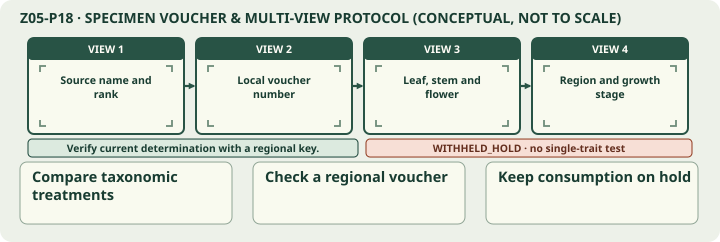

Z05-P18 · Wild foods and poisonous lookalikes · New manuscript
Nettle Records: Urtica dioica and Native Urtica gracilis Naming
Document diagnostic traits of Urtica dioica and contrasting lookalikes under permanent consumption HOLD.
When it applies · Moist rich floodplains, woodland edges, stream banks; Spring-Summer (Vegetative & flowering stems).
Equipment · Regional references, accession information and non-contact photographs or notes, where safe.

Actions
- Check which treatment and specimen record apply before using the name. Kew accepts Urtica gracilis as a distinct name and lists older Urtica dioica infraspecific names. Confirm the local voucher and current determination.[B25, B02]
- Document the example without touching stinging hairs. Compare leaf arrangement, stem and flowering traits to a current regional flora; no one trait establishes identification.[B02, B13, B20]
- Separate recognition from eating (Raw stinging hairs cause painful contact urticaria; old plants form irritating cystoliths; consumption withheld); keep WITHHELD_HOLD and check site and species protections before any specialist fieldwork.[B19, B21, B24]
Failure recognition · Single-trait guessing or common names confuse Urtica dioica with Laportea canadensis, risking poisoning.[B03, B10, B24]
Verify · Keep the identification provisional until the voucher, region, life stage and independent diagnostic characters are reviewed by the qualified specialist.[B02, B20]
Stop or change course · Keep consumption on WITHHELD_HOLD. For suspected ingestion call U.S. Poison Help at 1-800-222-1222 promptly. Call 911 for collapse, seizure, breathing trouble or inability to wake.[B09, M15]
Evidence and editorial notes
- B02 · Bell Museum (UMN) · Bell Museum Specimen Collections Portal (Current web edition)
- Section: Curated herbarium and fungarium voucher specimen standards · Conditions: Corroborating species traits against documented physical vouchers
Support: Curated herbarium and fungarium vouchers link accepted scientific names, collection locality, habitat, and morphology to verifiable specimens.
Limitations: Image-search labels and crowd-sourced guesses cannot substitute for vouchered keys and qualified taxonomic review. · Conflicting evidence: None noted.
Editorial note: Core P19-A voucher discipline. · Specialist reviewer: Herbarium / fungarium curator
Primary source · checked 2026-11-25 - B03 · USDA NRCS · PLANTS Database: Accepted Taxa and Regional Distribution (Current web edition)
- Section: Accepted botanical nomenclature, authorities, and synonyms · Conditions: Standardizing plant scientific names across regional floras
Support: Tracking accepted Latin binomials, taxonomic authorities, and legacy synonyms prevents dangerous common-name confusion.
Limitations: Common names like hemlock, nightshade, elder, or wild carrot refer to unrelated toxic and non-toxic taxa across regions. · Conflicting evidence: None noted.
Editorial note: Prevents common-name misidentification. · Specialist reviewer: Plant taxonomist
Primary source · checked 2026-11-25
Current assessment · A04-B03 (2026-11-25) · Reopened: earlier closure narrowed (A04): Name crosswalk is a documentation method. A catalog search cannot establish a name as current across treatments or prevent a field misidentification. Limits: Specialist review PENDING (Plant taxonomist); publication HOLD. All release decisions pending. - B09 · National Capital Poison Center · First Aid for Poisonings (Current web edition)
- Section: When to call 911; get help from poison experts · Conditions: Suspected poisoning in the United States
Support: Call 911 for collapse, seizure, trouble breathing or inability to wake. Otherwise promptly call Poison Help at 1-800-222-1222.
Limitations: Use route- and substance-specific advice. Do not wait for symptoms or collect unknown material if doing so risks exposure or delays care. · Conflicting evidence: Conditions are recorded in the A03 audit.
Editorial note: Mandatory Z05 poison-response escalation. · Specialist reviewer: Clinical toxicologist / Poison Center
Primary source · checked 2026-11-25 - B10 · National Capital Poison Center · Poisonous Plants and Berries Overview (Current web edition)
- Section: Poisonous plants, berries, and dose-dependent pediatric risk · Conditions: Household, trailside, and wild berries, seeds, and foliage
Support: Many attractive wild berries, seeds, and roots contain cardiac glycosides, alkaloids, or oxalates that cause rapid toxicity, especially in children.
Limitations: Never sample unknown plants; recognition and consumption suitability remain separate decisions. · Conflicting evidence: None noted.
Editorial note: Separates recognition from consumption. · Specialist reviewer: Clinical toxicologist and botanist
Primary source · checked 2026-11-25
Current assessment · A04-B10 (2026-11-25) · Reopened: earlier closure narrowed (A04): Supports poison avoidance and referral. Compound groups, onset and pediatric outcomes differ by species and exposure. Broad timing and category assertion needs species-level toxicology. Limits: Specialist review PENDING (Clinical toxicologist and botanist); publication HOLD. All release decisions pending. - B13 · CDC / NIOSH · Outdoor Workers: Poisonous Plants Safety (2024)
- Section: Poisonous plant recognition and avoidance for outdoor workers · Conditions: Woodland, edge, and wetland fieldwork
Support: Learn local poisonous plants by leaf arrangement, stem traits, and habitat before field work, wear protective layers, and wash contaminated tools and clothing separately.
Limitations: Single-season familiarity fails in winter when woody vines and dormant stems retain active urushiol. · Conflicting evidence: None noted.
Editorial note: Supports multi-season toxic plant awareness. · Specialist reviewer: Outdoor safety and botanist
Primary source · checked 2026-11-25
Current assessment · A04-B13 (2026-11-25) · Bounded support newly confirmed (A04): Recognize local plants, use protective clothing and clean tools and clothing after exposure. Single characteristics do not provide field or consumption clearance. Limits: Specialist review PENDING (Outdoor safety and botanist); publication HOLD. All release decisions pending. - B19 · Minnesota DNR · Terrestrial Invasive Plants and Toxic Lookalikes (Current web edition)
- Section: Terrestrial invasive species and roadside contamination hazards · Conditions: Disturbed corridors, edges, and utility rights-of-way
Support: Roadsides and invasive-dominated corridors are frequently sprayed with herbicides and accumulate runoff metals and road salts.
Limitations: Never collect food plants from roadsides, industrial lots, sprayed corridors, or contaminated floodplains even if species identity is certain. · Conflicting evidence: None noted.
Editorial note: Separates species ID from site-contamination safety. · Specialist reviewer: Environmental health and botanist
Primary source · checked 2026-11-25
Current assessment · A04-B19 (2026-11-25) · Open: support partial or missing (A04): Smaller contamination risk subset supported. Frequency and mixture of salts, metals and herbicides at a specific location are unsupported as a blanket claim. Limits: Specialist review PENDING (Environmental health and botanist); publication HOLD. All release decisions pending. - B20 · USDA Forest Service · Celebrating Wildflowers: Plant Identification and Conservation (Current web edition)
- Section: Botanical morphology terminology and multi-character keys · Conditions: Observing leaf venation, margins, flower symmetry, and fruit anatomy
Support: Accurate plant identification requires confirming multiple independent morphological characters at the observed life stage.
Limitations: Missing flowers, fruit, or underground parts require stopping identification rather than guessing. · Conflicting evidence: None noted.
Editorial note: Enforces multi-feature identification standard. · Specialist reviewer: Plant taxonomist
Primary source · checked 2026-11-25 - B21 · USDA Forest Service · Ethnobotany, Wild Foods, and Conservation Precautions (Current web edition)
- Section: Ethnobotanical limits, preparation hazards, and permit rules · Conditions: Wild plant/fungus gathering ethics and toxicity processing limits
Support: Some traditionally used plants contain raw toxins (cyanogenic glycosides, oxalates, tannins, alkaloids) that require verified preparation or remain unsafe for sensitive groups.
Limitations: Historical ethnobotanical mentions are never modern clinical safety clearances; maintain consumption status WITHHELD until qualified review. · Conflicting evidence: None noted.
Editorial note: Enforces recognition-vs-consumption separation. · Specialist reviewer: Ethnobotanist and food toxicologist
Primary source · checked 2026-11-25
Current assessment · A04-B21 (2026-11-25) · Open: support partial or missing (A04): Historical use and hazard examples do not substantiate a safe preparation mechanism or dose for the profile. Consumption remains withheld. Limits: Specialist review PENDING (Ethnobotanist and food toxicologist); publication HOLD. All release decisions pending. - B24 · National Capital Poison Center · Mushroom poisoning: prevention and response (Current reference)
- Section: Prevention tips and what to do after ingestion · Conditions: Wild mushroom recognition and suspected ingestion
Support: Lookalikes can fool observers. Avoid eating wild fungi on unverified identification and seek poison-centre advice promptly after suspected ingestion.
Limitations: Reject folk tests and generated-image clearance as an editorial restriction. Preparation cannot substitute for poison risk or identification review. · Conflicting evidence: Conditions are recorded in the A03 audit.
Editorial note: Enforces Z05 fail-closed edibility rule. · Specialist reviewer: Botanist, mycologist, and clinical toxicologist
Primary source · checked 2026-11-25 - B25 · Kew Plants of the World Online · Urtica gracilis Aiton (Current treatment)
- Section: Accepted name and synonyms · Conditions: Nomenclature of Urtica gracilis in Kew treatment.
Support: Kew accepts Urtica gracilis Aiton and includes older Urtica dioica infraspecific names among its synonyms.
Limitations: A nomenclatural treatment does not determine a Minnesota specimen, field morphology or edibility. · Conflicting evidence: Consult the regional treatment and voucher determination for the local usage.
Editorial note: Name comparison only. Consumption remains withheld. · Specialist reviewer: Regional botanist and herbarium curator
Primary source · checked 2026-11-25 - M15 · National Capital Poison Center · First Aid for Poisonings (Current web edition)
- Section: First aid for swallowed, inhaled, skin and eye exposure; when to call 911 · Conditions: Suspected poisoning in the U.S.
Support: For collapse, seizure, breathing trouble or inability to wake call 911. Otherwise get timely poison-center advice. Do not induce vomiting.
Limitations: Substance and route determine immediate care. Keep rescuers away from contaminated scenes. · Conflicting evidence: See A02 claim audit for boundaries.
Editorial note: Separates 911 life-threat activation from Poison Control guidance. · Specialist reviewer: Medical toxicology and poison control
Primary source · checked 2026-11-25
Source lineage · New manuscript (Z05 P19-C regional atlas) · Classification · New manuscript.